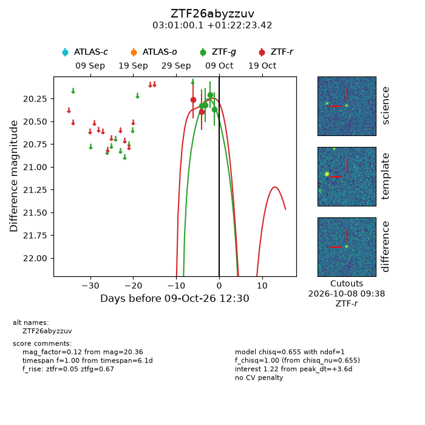
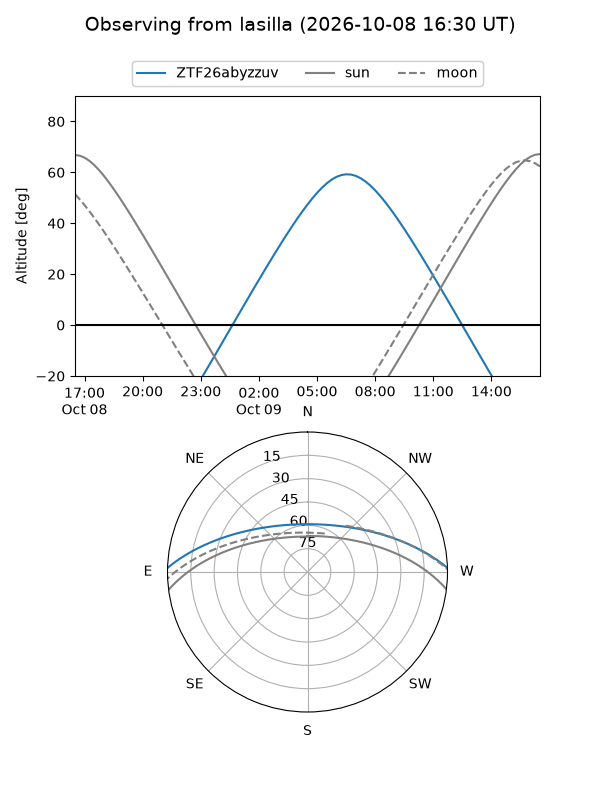
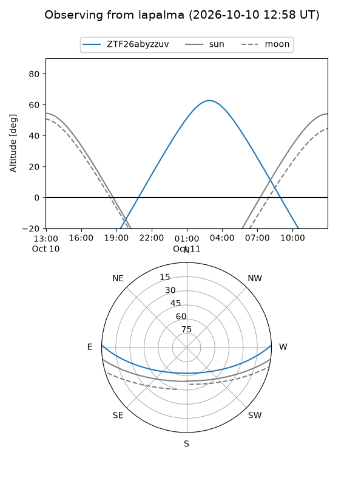
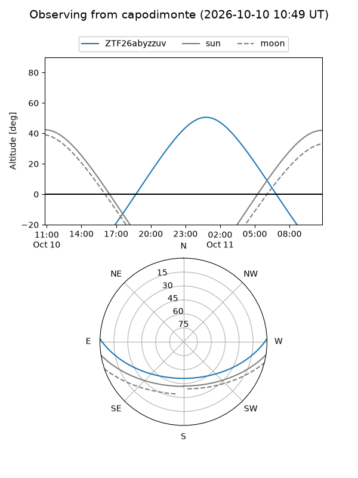
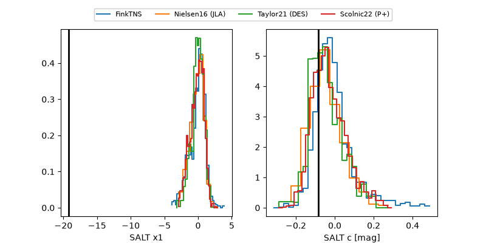

ZTF26abyzzuv
Target ZTF26abyzzuv at 2026-10-09 12:32
Aliases and brokers:
FINK-ZTF: ztf.fink-portal.org/ZTF26abyzzuv
Lasair-ZTF: lasair-ztf.lsst.ac.uk/objects/ZTF26abyzzuv
ALeRCE-ZTF: alerce.online/object/ZTF26abyzzuv
Direct TNS query: direct search
alt names
ZTF26abyzzuv (ztf,fink_ztf)
Coordinates:
equatorial (ra, dec) = 45.2502,+1.37317
equatorial (HMS+DMS) = 03:01:00.05,+01:22:23.42
galactic (l, b) = (175.7481,-47.76343)
Flags:
peak dt: +3.6
Photometry:
last ztfg=20.36, ztfr=20.40
4 ztfg, 2 ztfr detections
Lightcurve

Visibility



Additional plots
